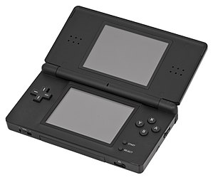
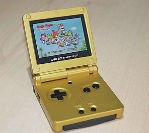
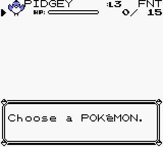
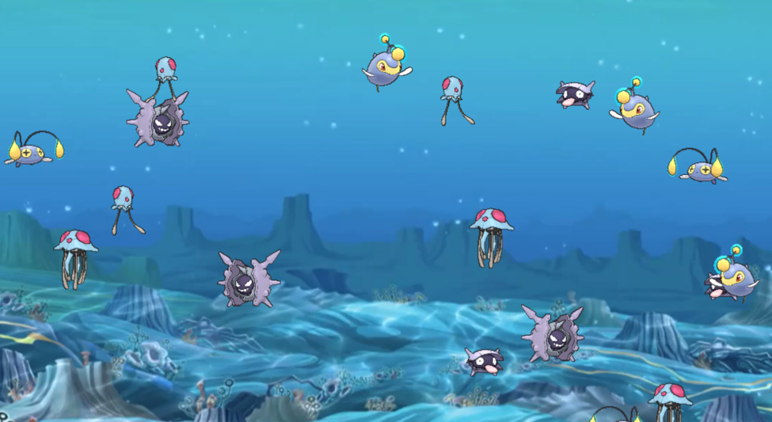

Midterm Project Proposal
By Khye Borg Liew and Julia Bok
HTML Aspect
Make the website background look like a Gameboy, Nintendo DS. The canvas could look like the gameboy screen.


Programming Aspect
- Have little Pokemon move in groups, same Pokemons can attract each other to form a huge Pokemon.
- The huge Pokemon size would be based on the number of small Pokemons that melted together.
- If the user clicks on the huge Pokemon, the Pokemon disperses into smaller Pokemons. The number of small Pokemons will correspond to the huge Pokemon size.
- After a certain amount of time, the Pokemons can evolve (each Pokemon/object will have their own time-existence counter).
- There can be a few boxes at the bottom that the user can choose from. Each box represents a different Pokemon that the user can add to the ecosystem.
- We could also have a "Clear Ecosystem" option too.
- Have a "bad character" that threatens the Pokemon. The bad character can "eat" up to a certain number of Pokemons to disrupt the ecosystem and "die"
- can have a "Happy Pokemon" Counter that counts how many Pokemon are floating in the ecosystem
- a "Dead Pokemon" Counter or "Sad Pokemon" Counter to count how many got eaten by the bad character
- If you right-click on a Pokemon, a little speech bubble pops up and gives the user information about the Pokemon. Each Pokemon (object) can have its own funny little message (tailored towards its appearance etc). We would make the text appear in a textbox that looks like the one from the Pokemon game (shown below).
- Each Pokemon can have its own function, e.g. blowBubbles
- Certain Pokemons should only be restricted to move on the ground

External Artwork
- Pokemon gifs with transparent background
- Focus on one type of Pokemon: water Pokemons
- Text boxes
- Pokemon theme background for the ecosystem
Draft Program Screenshot:
